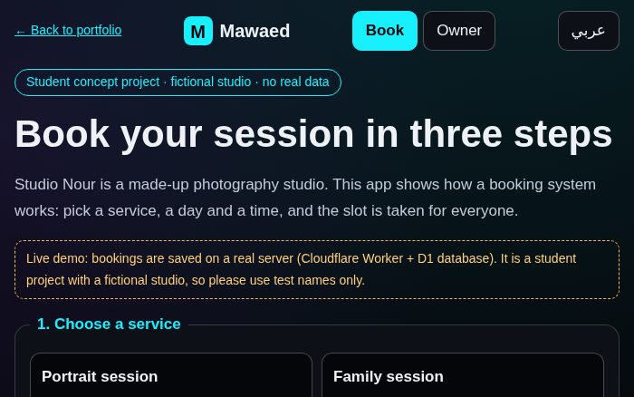

MAWAED
حجز مواعيد (واجهة وسيرفر)Booking app (front end + server)

المشكلةThe problem
استوديو تصوير صغير محتاج العملاء يحجزوا ميعاد من غير ما حد يرد على الموبايل، وصاحب الاستوديو يشوف الحجوزات ويأكدها.A small photo studio needs clients to book a time without anyone answering the phone, and the owner needs to see and confirm the bookings.
اللي بنيتهWhat I built
صفحة حجز بخطوات (خدمة، يوم، ساعة، بياناتك) بالعربي والإنجليزي، وسيرفر صغير بيحفظ الحجوزات، وصفحة للمالك بكلمة سر لتأكيد الحجز أو إلغائه ومعاها عدّادات (النهارده، الـ٧ أيام الجايين، في الانتظار، مؤكد). الميعاد اللي عدّى أو قريب أوي بيتقفل، والعميل يقدر يلغي حجزه بالكود ورقم موبايله. الاستوديو خيالي (Studio Nour).A step-by-step booking page (service, day, hour, your details) in Arabic and English, a small server that saves the bookings, and a password-protected owner page to confirm or cancel, with counters (today, next 7 days, pending, confirmed). Times that already passed, or start within an hour, are closed, and a client can cancel their own booking with the booking code and phone number. The studio is fictional (Studio Nour).
المعماريةArchitecture
ثلاث حاجات بس: صفحة React على GitHub Pages، وسيرفر Cloudflare Worker بيستقبل الطلبات ويفحصها، وقاعدة بيانات D1 بتحفظ الحجوزات. المتصفح مبيكلمش القاعدة مباشرة أبداً.Three parts only: a React page on GitHub Pages, a Cloudflare Worker that receives and checks the requests, and a D1 database that stores the bookings. The browser never talks to the database directly.
Browser (React + Vite)
GitHub Pages, EN / AR
| HTTPS, JSON
v
Cloudflare Worker (JS, free)
checks input, rate limit,
signs the owner token
| SQL
v
D1 database (SQLite)
bookings + unique indexإزاي بيتعامل مع الحجز في نفس الوقتHow simultaneous bookings are handled
السيرفر مبيعملش "اتأكد إن الساعة فاضية وبعدين احجز" لأن ده بيسيب فجوة بين الخطوتين. بدل كده بيعمل INSERT على طول، والفهرس الفريد الجزئي في القاعدة هو اللي بيسمح لواحد بس ينجح. التاني بياخد خطأ UNIQUE والسيرفر بيحوّله لـ 409.The server does not do "check the hour is free, then book", because that leaves a gap between the two steps. It does an INSERT straight away, and the partial unique index in the database lets only one succeed. The other gets a UNIQUE error and the server turns it into a 409.
قراراتيDecisions
المتصفح ممكن يتلاعب بيه، فالسيرفر بيفحص كل حاجة تاني: التاريخ خلال 14 يوم، الجمعة مقفول، الساعات من 10 لـ 17، الاسم والتليفون.A browser can be tampered with, so the server checks everything again: date within 14 days, closed on Fridays, hours 10 to 17, name and phone.
كلمة السر مش مكتوبة في الكود ولا في الريبو. السيرفر بيدي توكن موقّع بيشتغل 8 ساعات بعد الدخول.The password is not in the code or the repo. After sign-in the server gives a signed token that lasts 8 hours.
عشان محدش يملّى الجدول ببيانات وهمية، السيرفر بيقبل 10 طلبات حجز كل 10 دقايق لكل عنوان. كله على الخطة المجانية من Cloudflare.So nobody can fill the calendar with fake bookings, the server accepts 10 booking requests per 10 minutes per address. All of it runs on the free Cloudflare plan.
تحسينات اتضافتAdded after the first version
السيرفر بيحسب الوقت بتوقيت القاهرة، والساعة لازم تبدأ بعد ٦٠ دقيقة على الأقل من دلوقتي. لو حد حاول يحجز ساعة عدّت بيرجع 400 past_slot حتى لو الصفحة اتلاعب بيها.The server uses Cairo time, and a slot must start at least 60 minutes from now. Booking a passed hour returns 400 past_slot even if the page was tampered with.
من تبويب "حجزي" بكود الحجز ورقم الموبايل. الكود الغلط والرقم الغلط بيرجعوا نفس الرد (404) عشان محدش يخمّن الأكواد، وليه نفس حد الطلبات، والإلغاء بعد ما الجلسة تبدأ بيترفض.From the "My booking" tab with the booking code and phone number. A wrong code and a wrong phone give the same reply (404) so codes cannot be guessed, it has the same rate limit, and cancelling after the session has started is refused.
النهارده، الـ٧ أيام الجايين، في الانتظار، مؤكد. بتحسب الحجوزات الجاية وغير الملغية بس، ومحتاجة توكن المالك.Today, next 7 days, pending, confirmed. They count upcoming, non-cancelled bookings only and need the owner token.
اللي اتعلمتهWhat I learned
اتعلمت الفرق بين واجهة بتعرض بس وواجهة متوصلة بسيرفر وقاعدة بيانات: لازم أتعامل مع الأخطاء (النت، ساعة اتحجزت، كلمة سر غلط) وأكتب رسايل واضحة بالعربي والإنجليزي. واتعلمت إن أي حاجة بتتحط في الواجهة بتبقى علنية، فالأسرار مكانها السيرفر.I learned the difference between a page that only displays and one connected to a server and a database: I have to handle failures (network, a taken hour, a wrong password) and write clear messages in Arabic and English. I also learned that anything in the front end is public, so secrets belong on the server.
تحدي تقنيA technical challenge
اتنين ممكن يدوسوا على نفس الساعة في نفس اللحظة. لو السيرفر بس بيسأل «الساعة فاضية؟» وبعدين يحفظ، الاتنين ممكن يعدّوا. فخليت قاعدة البيانات هي اللي تمنع: فهرس فريد على اليوم والساعة للحجوزات غير الملغية، والسيرفر بيحوّل الخطأ لرد 409 ورسالة «الساعة دي اتحجزت».Two people can tap the same hour at the same moment. If the server only asks "is it free?" and then saves, both can pass. So the database does the blocking: a unique index on day and hour for bookings that are not cancelled, and the server turns the error into a 409 reply and a "this time was just taken" message.
CREATE UNIQUE INDEX one_active_slot
ON bookings(date, hour)
WHERE status != 'cancelled';جدول قاعدة البياناتDatabase schema
ده الجدول الحقيقي في D1. القيود (CHECK) بتمنع قيم غلط حتى لو السيرفر فيه غلطة، والفهرس الفريد الجزئي هو اللي بيمنع الحجز المزدوج.This is the real table in D1. The CHECK rules reject bad values even if the server code has a bug, and the partial unique index is what blocks double booking.
CREATE TABLE bookings (
id INTEGER PRIMARY KEY AUTOINCREMENT,
service TEXT NOT NULL CHECK (service IN ('portrait','family','product')),
date TEXT NOT NULL,
hour INTEGER NOT NULL CHECK (hour BETWEEN 10 AND 17),
name TEXT NOT NULL,
phone TEXT NOT NULL,
note TEXT NOT NULL DEFAULT '',
status TEXT NOT NULL DEFAULT 'pending' CHECK (status IN ('pending','confirmed','cancelled')),
created_at TEXT NOT NULL DEFAULT (datetime('now'))
);
-- one active booking per day and hour: this is what stops double booking
CREATE UNIQUE INDEX one_active_slot ON bookings(date, hour) WHERE status != 'cancelled';رد التعارض (409)The conflict reply (409)
لما الساعة تكون اتحجزت، السيرفر بيرد بالحالة 409 وبرسالة قصيرة، والصفحة بتحوّلها لجملة بالعربي أو الإنجليزي.When the hour is already taken, the server answers with status 409 and a short message. The page turns it into a sentence in Arabic or English.
POST /api/bookings (same day and hour as an active booking)
HTTP 409 Conflict
{"error":"taken"}اختبار التزامنConcurrency test
بعتّ عدد من الطلبات لنفس الساعة الفاضية مع بعض: الناجح لازم يكون واحد بس. الاختبار ده بيثبت سلامة البيانات تحت ضغط، مش وصول في نفس الميلي ثانية بالظبط.I sent many booking requests for the same free hour together. Exactly one must succeed. This proves data integrity under concurrent load, not arrival in the exact same millisecond.
| Requests | 201 | 409 | avg ms | p95 ms |
|---|---|---|---|---|
| 2 | 1 | 1 | 43.5 | 55.9 |
| 20 | 1 | 19 | 134.5 | 143.6 |
| 100 | 1 | 99 | 334.3 | 395.9 |
| 2 (live) | 1 | 1 | 887.5 | 928 |
الاختبار المحلي (28 نوفمبر 2026، 01:00 بتوقيت القاهرة) على wrangler dev بنفس كود السيرفر ونفس الجدول، لكن حد الطلبات (10 كل 10 دقايق لكل عنوان) اتعطّل محلي بس بإرسال عنوان مختلف مع كل طلب، لأن غير كده كانت معظم الطلبات هترجع 429. الاختبار الحي (طلبين) على السيرفر الحقيقي وحد الطلبات زي ما هو، وزمن الاستجابة فيه من المتصفح شامل الشبكة. بعد كل تشغيل الجدول فيه حجز نشط واحد بس للساعة. السجل الخام لكل طلب في الريبو: tests/.The local test (28 Nov 2026, 01:00 Cairo time) ran on wrangler dev with the same Worker code and the same schema, but the rate limit (10 per 10 minutes per address) was bypassed locally only, by sending a different address with each request. Otherwise most requests would return 429. The live test (2 requests) ran on the real Worker with its rate limit unchanged, and its latency is measured from a browser, network included. After each run the table held exactly one active booking for that hour. The raw per-request log is in the repo under tests/.
الاختباراتTests
٢٢ اختبار وحدة بساعة مزيفة وقاعدة SQLite في الذاكرة، بنفس كود السيرفر ونفس الجدول: كلهم نجحوا (الملف worker/tests/unit.mjs في الريبو). وبعدها اختبار كامل من المتصفح على نسخة محلية ثم على النسخة الحية: حجز، إلغاء بكود ورقم، رفض الرقم الغلط، تأكيد المالك، والعدّادات. وبعد الاختبار الحي مسحت حجوزات التجربة.22 unit checks with a fake clock and an in-memory SQLite database, using the same Worker code and the same schema: all passed (the file worker/tests/unit.mjs is in the repo). Then a full browser run on a local copy and on the live version: booking, cancel with code and phone, wrong phone refused, owner confirm, and the counters. I deleted the test bookings after the live run.
قياس LighthouseLighthouse (measured)
Performance 73 · Accessibility 100 · Best Practices 96 · SEO 100Performance 73 · Accessibility 100 · Best Practices 96 · SEO 100
اتقاس على النسخة المبنية (موبايل، Lighthouse headless) يوم 28 نوفمبر 2026. الأرقام بتتغير من تشغيلة للتانية.Measured on the production build (mobile, headless Lighthouse) on 28 Nov 2026. Scores vary a little between runs.
حدود الاختبارات وحدود المشروعTest limits and known limitations
- اختبار التزامن بيثبت سلامة البيانات تحت ضغط، مش وصول في نفس الميلي ثانية بالظبط.The concurrency test proves data integrity under load, not arrival in the exact same millisecond.
- الاختبار المحلي (٢٠ و١٠٠ طلب) اتعمل بتعطيل حد الطلبات محلي بس. الاختبار الحي كان طلبين بس.The local runs (20 and 100 requests) bypassed the rate limit locally only. The live run was only 2 requests.
- قاعدة "الميعاد عدّى" اتجربت بساعة مزيفة في اختبارات الوحدة بس، لأن الساعة الحقيقية مينفعش تتغير على السيرفر الحي. اختبارات الوحدة على SQLite مش على D1 نفسها.The "time has passed" rule was tested with a fake clock in unit tests only, because the live Worker's real clock cannot be changed. The unit tests run on SQLite, not on D1 itself.
- مفيش اختبار حمل حقيقي، وزمن الاستجابة الحي اتقاس من المتصفح شامل الشبكة.There is no real load test, and the live latency was measured from a browser, network included.
- استوديو واحد وكلمة سر واحدة للمالك، من غير حسابات.One studio and one shared owner password, no accounts.
- ساعات الشغل وأيام الإجازة ثابتة في ملف الإعدادات، مش بيعدلها المالك.Working hours and closed days are fixed in a settings object, not editable by the owner.
- مفيش إشعارات للعميل ولا دفع.No notifications to the client and no payments.
- ده نموذج تجريبي: الاستوديو خيالي ومفيش عملاء أو حجوزات حقيقية.This is a concept project: the studio is fictional and there are no real clients or bookings.